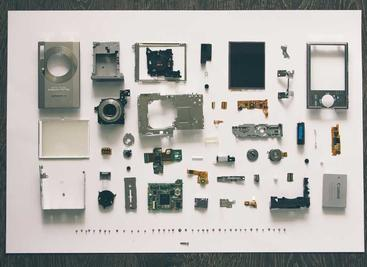

UI significa interfaz de usuario: la parte gráfica de una aplicación, sitio web o dispositivo con la que interactúa un usuario humano. Los diseñadores de UI hacen que estos diseños y elementos interactivos sean intuitivos, accesibles e inclusivos.
Crear interfaces visualmente agradables es importante, pero la interfaz de usuario va mucho más allá de la estética. Cuando se utiliza una aplicación, ésta debe ser intuitiva: se debe saber cómo hacer lo que se ha propuesto sin ninguna explicación. Debe saber dónde se encuentra dentro de un sitio o una aplicación.
También debe ser accesible e inclusiva. Los usuarios deben ser capaces de manejar y entender la interfaz independientemente de su capacidad, edad, raza, identidad de género o procedencia. Esto puede significar la elección de una fuente fácil de leer y traducible a diferentes idiomas, o la selección de colores que los usuarios daltónicos puedan diferenciar.
Se refiere a una persona que tiene múltiples habilidades que puede utilizar de forma independiente para completar el proceso de diseño o desarrollo de un producto. Significa que el diseñador puede entender el problema para luego diseñar una solución y, como paso final, llevarlo a la realidad.
El mayor beneficio que podemos aportar como Full Stack Designer es el pensamiento comprensivo. Un diseñador que está familiarizado con el desarrollo del producto y el proceso de diseño conoce los límites del diseño de producto. Un Full Stack Designer tiene más conciencia de lo que puede o no funcionar en el diseño ya que tiene expectativas más realistas incluso antes de empezar a mover píxeles o escribir código.
Tenemos que estar seguros de elegir la industria correcta para convertirnos en Full Stack Designer ya que si queremos ser buenos diseñadores, estamos obligados a mantenernos actualizados en todas las tendencias del diseño tecnológicas y el surgimiento de nuevas herramientas para enriquecer nuestro set de skills.

Los desarrolladores full-stack participan en todos los aspectos del desarrollo de software, desde el diseño de la experiencia del usuario hasta la gestión de bases de datos del lado del servidor.
El mundo del desarrollo full-stack es amplio, y muchas tecnologías nuevas y en evolución amplían continuamente los límites de lo que un desarrollador full-stack puede crear. Mantenerse al día con las tecnologías y técnicas de vanguardia en el campo del desarrollo full-stack es uno de los muchos aspectos emocionantes de trabajar en este puesto.
Si te apasiona el diseño y te interesa el desarrollo de productos y el trabajo de diseño web, la carrera de diseño de interfaz de usuario podría ser una buena opción. Trabajar en este campo te da la oportunidad de trabajar en un entorno de colaboración para crear soluciones a problemas del mundo real.
Los desarrolladores full-stack pueden ser creativos, tener predilección por los gráficos, ser expertos en internet y la tecnología, y tener una excelente atención al detalle.
El Product Manager es el perfil responsable de que las cosas salgan adelante. Para poder conseguirlo, es crucial que como PM seas capaz de comunicarte con los diferentes departamentos, personas y stakeholders que están involucrados en el producto de forma directa o indirecta. Cuando diversas partes de la organización no se entienden entre ellas se pierde información, existen errores en la ejecución y, lo peor de todo, afecta a la calidad del producto.
El Product Manager o Director de Producto es la figura que tiene la responsabilidad de identificar las necesidades de los consumidores y satisfacerlas a través del desarrollo y entrega de productos. Esto incluye la parte de investigación previa al desarrollo del producto, las estrategias y el plan de marketing posteriores al mismo para que la recepción por parte del mercado sea lo más óptima posible. El PM (Product Manager) es un puesto que se encuentra entre los departamentos de negocio, tecnología y experiencia de usuario, trabajando como intermediario y puente
Tradicionalmente, se ha llegado a definir al Product Manager como el CEO del producto, ya que será este quien trace los objetivos y proyectos en coordinación con el resto de equipos y departamentos para conseguir cumplir los objetivos de lanzamiento y mejora constante.
| Design | Rol | Definicion | Conocimientos | Herramientas |
| Diseñador de interfaz de usuario | sasa |